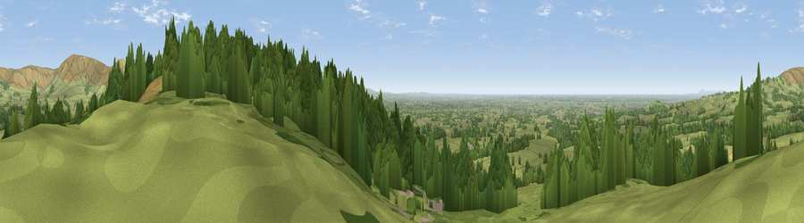

Viewpoint near Bleasdale
#2482 in England · top 3% of its area beats it · near BleasdaleThe view, rendered

A 360° render of this exact spot computed from the terrain model, tree cover and land cover — summer colours, afternoon light, calibrated against photographs of famous viewpoints. Real trees, hedges and buildings will differ in detail.
The panorama
Grey silhouette: terrain skyline in each direction (720 bearings, Earth curvature and refraction included). Dashed green: skyline with trees (+15 m) and buildings (+8 m) as obstacles. Blue strip: how far the ground is visible on each bearing.
Where the view opens
Wedge length = distance to the farthest visible ground on that bearing (vegetation-aware). Rings at 10, 25 and 50 km.
What fills the view
57% grassland · 37% woodland · 2% built-up · 2% cropland ·
Angular shares of the visible panorama (visual magnitude), not map area. Landscape diversity 0.40 (0–1 Shannon).
Key numbers
More beautiful places nearby
The staircase of upgrades: each row has a higher view potential than everything closer. Driving times are estimates from straight-line distance, calibrated against real road routing — check an actual route before setting out.
| Place | Direction | Drive | Score |
|---|---|---|---|
| Parlick | NE · 4 km | ~9 min | 77.5 |
| Viewpoint near Scorton | NW · 7 km | ~15 min | 79.9 |
| Darwen Hill | SSE · 24 km | ~39 min | 80.7 |
| Rivington Pike | SSE · 30 km | ~47 min | 81.9 |
| Warton Crag | NNW · 31 km | ~48 min | 83.2 |
| Viewpoint near Grange-over-Sands | NNW · 39 km | ~58 min | 83.4 |
| Viewpoint near Cartmel | NNW · 42 km | ~62 min | 87.0 |
| Viewpoint near Cartmel | NNW · 42 km | ~62 min | 87.2 |
53.87978, -2.66356 · source: screening · position refined by local search. Computed location — check access rights before visiting.